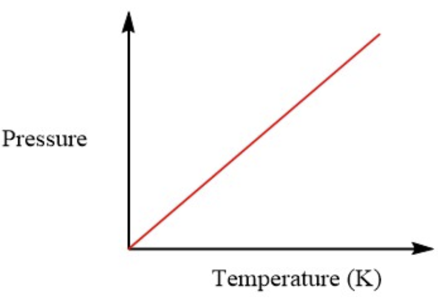
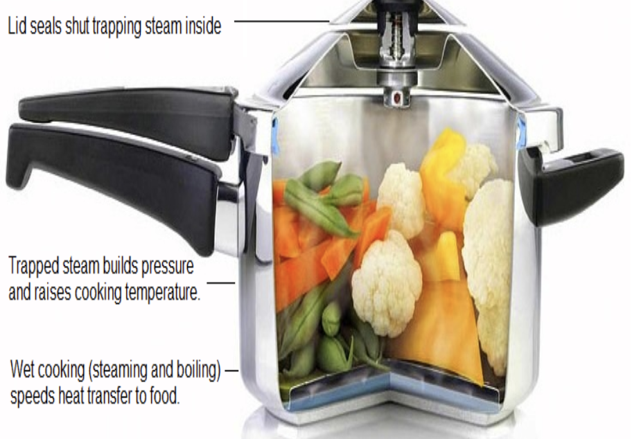

Above is the formula for Gay-Lussac's Law.
Gay-Lussac’s law states that if a gas is kept at a constant volume, the pressure of the gas varies directly with the absolute temperature of the gas. In other words, the pressure exerted by a gas is directly proportional to the temperature of the gas. French chemist, Joseph Gay-Lussac, discovered the relationship between the pressure of a gas and its absolute temperature.
As this graph shows, since volume remains constant, and pressure and temperature are directly proportional, if one variable increases, the other also increases. In this term, if the pressure increases, then temperature increases, and if the pressure decreases, then the temperature decreases.
Pressure cookers work by trapping steam and increasing pressure, which raises the cooking temperature of the food inside.
Here is a walk through an example problem:
The pressure in a car tire is 6.5 atm at 40°C. What will be the final pressure if the temperature rises up to 68°C?
Let's look back at the formula P1/T1 = P2/T2
Think: "What is missing?" or "What is it asking for?"
Read the problem carefully and you will notice that the initial pressure (P1) is 6.5 atm, the intial temperature (T1) is 40°C, and the final temperature (T2) is 68°C.
This makes our given look like this:
P1 = 6.5 atm
T1 = 40°C
T2 = 68°C
What we are looking for is the final pressure (P2).
Remember: Always include the unit of measurements in the final answer.
Before we can start we need to convert Celsius to Kelvin. To do this we add it to 273. °C + 273 = K
T1= 40°C + 273 = 313K
T2= 68°C + 273 = 341K
V1/T1 = V2/T1
This makes our given look like this:
P1 = 6.5 atm
T1 = 313K
T2 = 341K
P1/T1 = P2/T2
6.5 atm/313K = P2/341K
6.5 atm x 341K = P2 x 313K
------------------------------------------ To isolate P2
313K
7.08 atm = P2
The final pressure (V2) is 7.08 atm.
Note: We rounded off the decimal by 2 places.